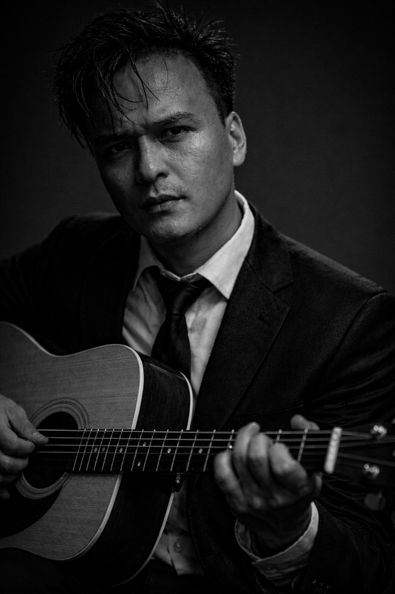

Sushant Shrestha is a Pacific Northwest recording artist and poet working across music, poetry, and photography. He calls his music mist rock: songs about becoming and belonging, written from the experience of navigating multiple cultural identities and wisdom traditions.
His poetry, published as Ryusho Arts, circles the same preoccupations, longing, the beloved as a kind of doorway, mystery surfacing in ordinary moments. He is an author and co-editor of Embracing Wholeness in Diversity, a forthcoming volume on diversity as a path to wisdom and human flourishing, and has taught graduate-level courses in social transformation, cross-cultural studies, and leadership at John F. Kennedy University. He also works in impact investing, at the intersection of climate, technology, and community.
For him these are not separate pursuits but one life tasted from many angles. The investor, the poet, the musician, the teacher are all asking the same question of how a person becomes whole while holding many worlds at once. Art, science, and spirit move as one life, the same wave finding different shores and depths.
Tender Anomalies is the sound of that awareness turned inward: songs for the falling in love and the falling apart, for the mess and the mending, all the while walking between worlds and listening for a home not yet arrived.